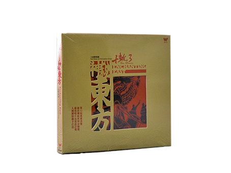

關於十鼓樂團
成立於2000年春天，『傳創台灣土本文化，發揚鼓樂藝術
薪傳』是樂團最大發展目標。而「十」字代表著鼓棒交疊，
匯集十方的能量，共同凝聚團結的力量「十鼓」以文化的力
量串連起城市運轉的特色及風格，2007年於台南縣仁德鄉成
立「十鼓文化村」，更進一步朝打造『亞洲鼓樂交流平台』
的文化發展目標努力，堅持以傳創本土擊樂藝術為定位，期
望藉此喚起國人對傳統鼓樂的重視，企圖為台灣開創出一個
熱鬧、多元兼具本土，且具有前瞻性的鼓術文化風格，更期
望能使台灣在世界上成為著名的【鼓樂之島】。
多年來，樂團傳創的音樂作品深受觀眾的喜愛，以在地的題
材、風景、多樣化民族擊樂的元素，豐富了傳統擊樂原有面
貌，更令社會大眾驚豔原來『鼓』是如此的多元及精彩！此
外，十鼓擊樂團亦秉持：傳創本土擊樂、普及全民鼓術、落
實人本教育、開啟多元智慧、推動特教啟蒙，廣納世界文化
、為推廣鼓樂藝術之宗旨目標。
演出紀錄&事記
2017
嘉義文創園區-十鼓囪擊劇場成立
2016
受國家兩廳院邀請與歐陸巨擘導演狄奧多羅斯‧特爾左布勒斯跨國合作「酒神的女信徒」，鼓樂創作暨演出/國家兩廳院藝文廣場（戶外）
2016
受邀至中華民國外交部國慶酒會演出
2016
受邀至馬祖南竿媽祖在馬祖昇天祭演出
2015
受家樂福文教基金會邀請演出「鼓的傳說」音樂會/國家兩廳院藝文廣場
2014
與法國舞團Karine Saporta合作《TAM-Tai》於巴黎音樂廳演出
2014
受邀至英國 愛丁堡藝穗節巡演（首度參與2014愛丁堡藝穗節臺灣季演出榮獲5星級評價）
2013
榮獲亞洲文化推展聯盟入選2013年「亞洲藝術瑰寶」台灣代表團隊之一，於泰國清邁參演國際性亞洲文化年會之頒獎典禮
2011
參加法國參議院藝術節、亞維儂藝術節、普羅旺斯Minos 藝術節
2010
受美國PAS打擊樂藝術協會邀請，至印第安納州參與「美國PAS世界打擊樂藝術年會」演出
2010
法國城堡區東方藝術節、法國亞維儂藝術節
2009
【鼓之島】專輯入圍第9屆美國獨立音樂獎《最佳世界傳統音樂專輯》
得獎作品 一
2007
入圍第18屆金曲獎《民族樂曲專輯獎》
2009
【鼓之島】專輯入圍第9屆美國獨立音樂獎《最佳世界傳統音樂專輯》
2009
「鼓之島」專輯入圍第52屆葛萊美獎《最佳世界傳統音樂專輯》
